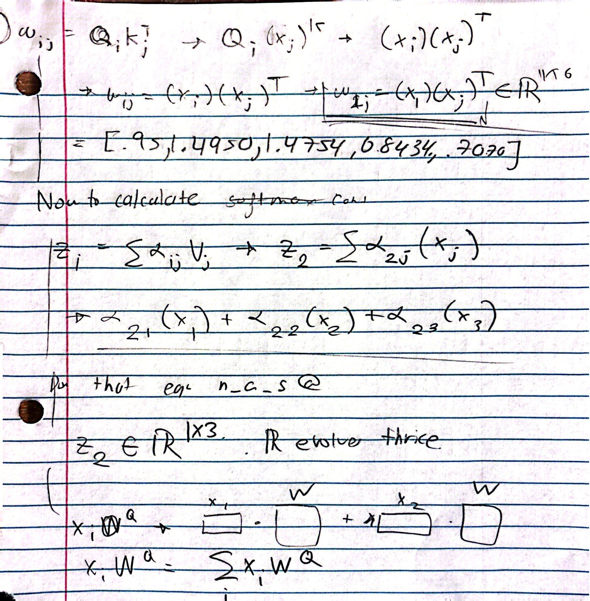
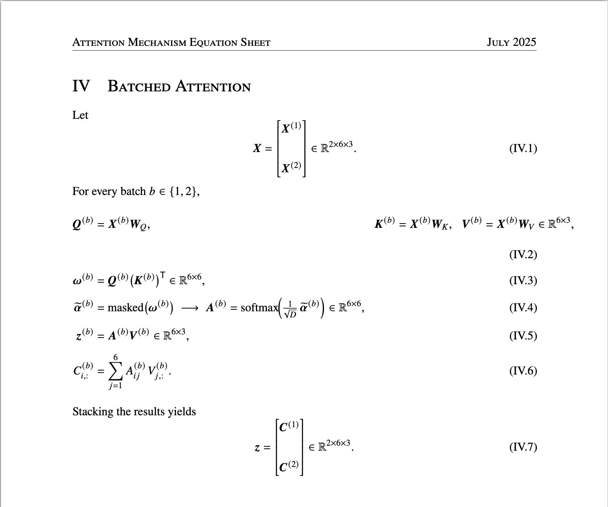

Like I mentioned yesterday, today I didn't read any new content. I reimplemented all the functionalities and classes discussed in the chapter with mostly only using an equation sheet, except for in built torch functions like linear and masking and some other stuff. Here are my notes and also the equation sheet i used.


These sessions where I just implement stuff from scratch are going well. It's
really helping me solidify my understanding, and also find out what niches there
are that I might need to look back on. For example, I'm discovering that I'm having
a little bit of trouble with d_in, d_out and what exactly those are supposed to be
I'm also a little bit confused about context_length. Some of these are
user designed, so that means that I tweak them in the development process and have no
set value. That makes things a little bit harder but thats ok.
Tomorrow I'm going to start chapter 4. This is a really exciting chapter. What lessons can I take away from this chapter? First of all, having mathematical explanations to the problems or even just symbolic is vital for me to reproduce them without referring to the code. It's also vital for me to understand it to begin with. I think one of most important is the space indications, especially when we start working in larger and larger batches. So make sure to implement that.
Another thing I should take note of while I'm reading are those really niche functionalities, for example,
nn.Linear(d_in, d_out, bias=False). Those things should just be written in
some place on the side so that I can refer to them when the time comes. It would also probably
be helpful to include a short description.
Feeling pretty good about this project. I'm taking it a lot more serious than other projects. But its only a little over a week. I can only really call it a project if I spend at the very least up till the school year start.